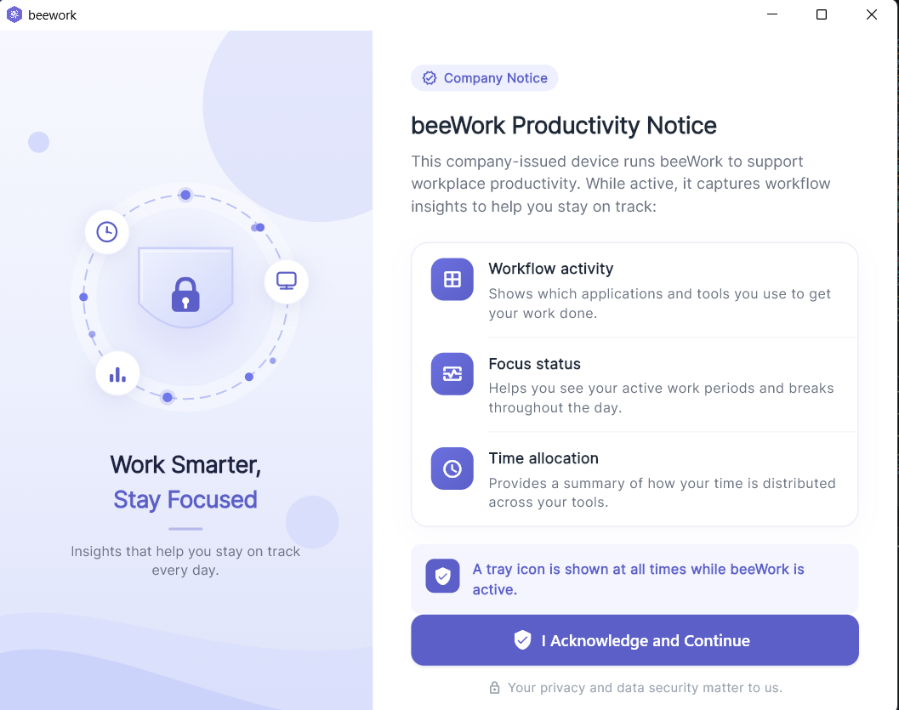
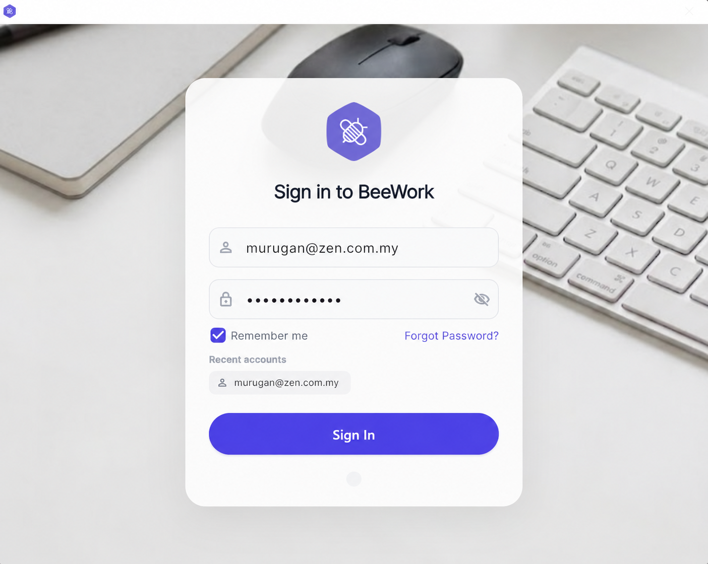
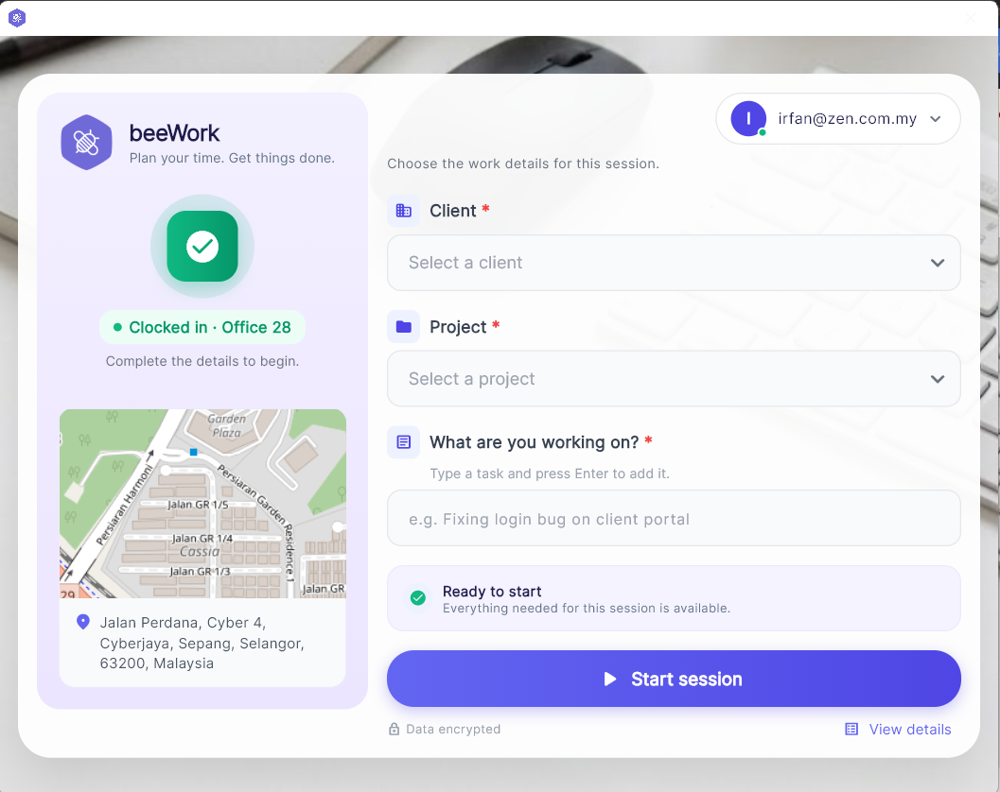
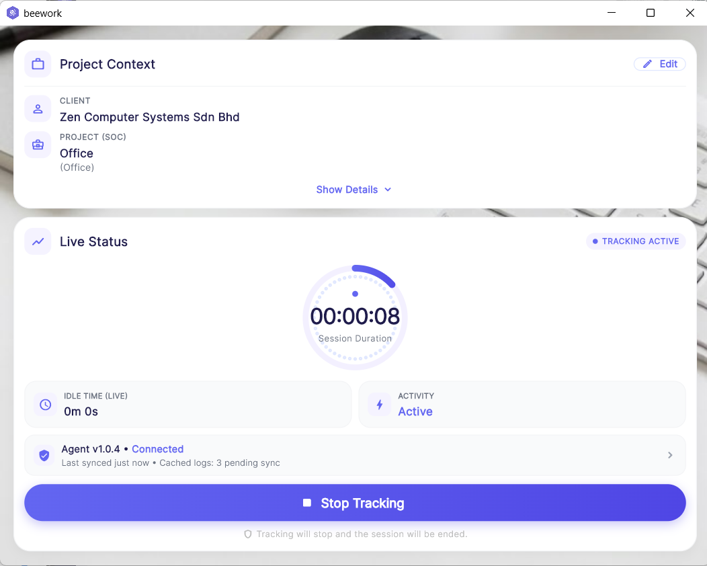
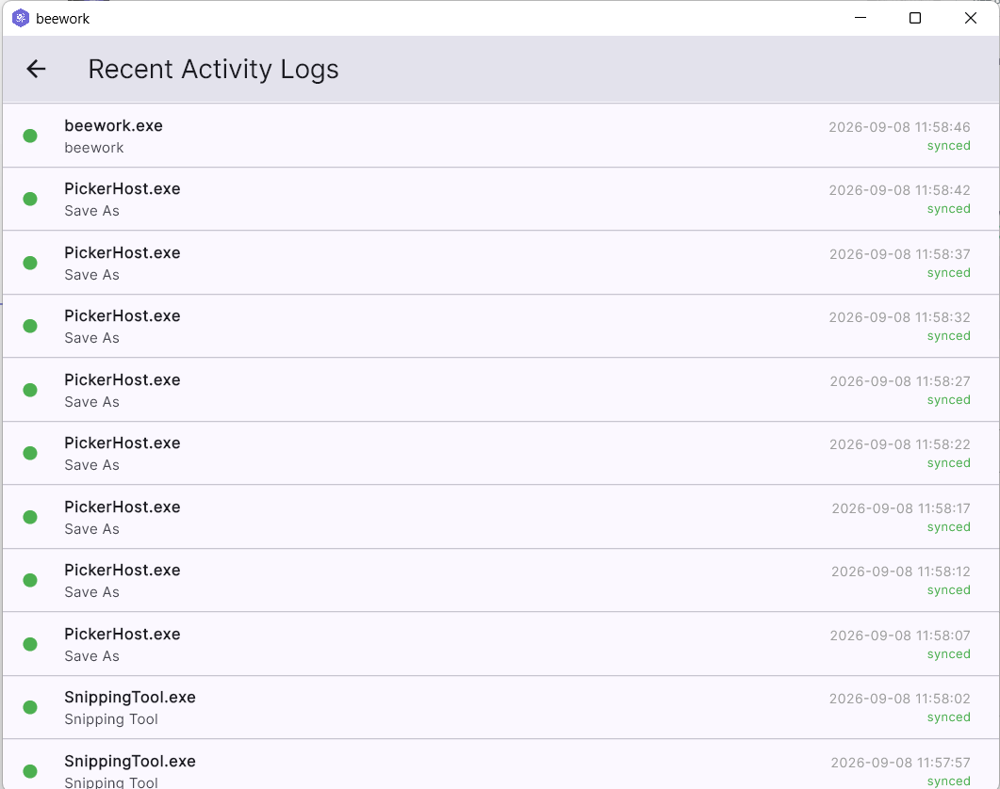
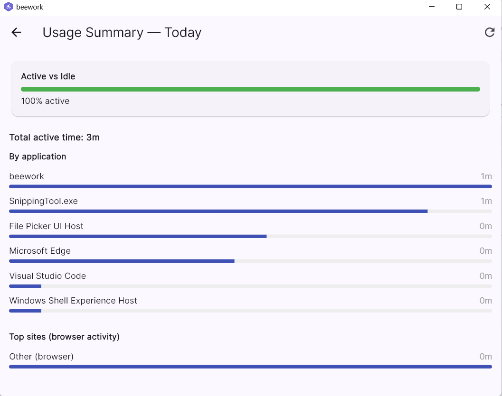
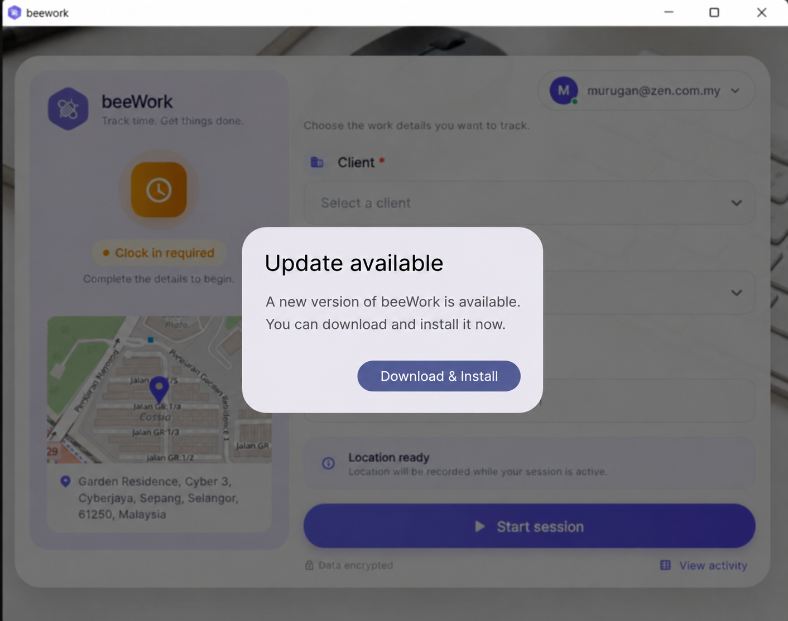

1. Introduction
beeWork is a desktop app for recording your working hours. Sign in with your company account and start a session when you begin work. Your recorded hours are saved and synced automatically.
- Sign in with your company account to get started
- Start a session to record your working hours
- You can minimise beeWork while a session is running
2. First Launch
The first time you open beeWork, it shows a notice explaining how the app works during an active session. It covers:
- Workflow activity — the applications and tools you use to get your work done.
- Focus status — your active work periods and breaks throughout the day.
- Time allocation — how your time is distributed across your tools.

3. Login
- 1Enter your company email and password.
- 2Tick "Remember me" to save your credentials.
- 3Click Login.
Previously used accounts are shown for one-tap autofill.

4. Start a Work Session
The main screen is where you set up your work session.
- 1Clock in first (required). You must already be clocked in for the day before you can start a session.
- 2Client — select the client you're working for.
- 3Project — select the project (loads after you pick a client).
- 4What are you working on? — type a task and press Enter.
- 5Click Start session.
After you start, the window minimises to the system tray and a tray icon shows the status.

5. Tray Icon
While beeWork is running, a tray icon is always shown in the Windows notification area, so you can tell at a glance that the app is active.
- Left-click the icon to reopen the app window.
- Right-click the icon to open its menu.
6. Work Session Assistant
Opening the app from the tray shows the Work Session Assistant — an overview of your current desktop activity and sync status:
- Live elapsed clock for the current session.
- Active vs. idle time.
- Whether logs are pending or synced.

7. Recent Activity Logs
The Recent Activity Logs screen lists the activity captured during your session:
- The application/process name.
- The window title.
- The time it was captured.
- Whether it's synced (green) or still pending (grey).

8. Usage Summary — Today
The Usage Summary screen shows today's activity breakdown:
- Total active time.
- Active vs. idle breakdown.
- Time by application — how long in each app.
- Top sites visited.
Use the refresh button to reload the latest figures.

9. Ending a Session
You can end a session two ways:
- 🖥️From the app: open the status window and choose End Session (a confirmation dialog appears).
- 📱On BeeWhere: if you clock out on your phone, beeWork detects it automatically and ends the session for you.
10. Updates
beeWork checks for updates automatically. When a new version is available, you'll see an "Update available" dialog.
- Click "Download & Install" to install the update.

11. Need Help?
Contact your internal team with any questions about this app, your data, or if you have problems logging in or syncing.